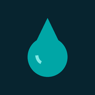

I
D
R
A
T
A
T
I
Idràtati, per rimanere idratàti
v3.1 · 2026-07-27
IDRATATI
Fontanelle
Case dell'acqua
Nascondi le rotte
Solo gratuite
Accessibili
Con vaschetta cani
Tieni premuto… segnalo una fontanella qui
×
La più vicina
Cerco l'acqua…

Tienila sul telefono
No grazie
Installa
×